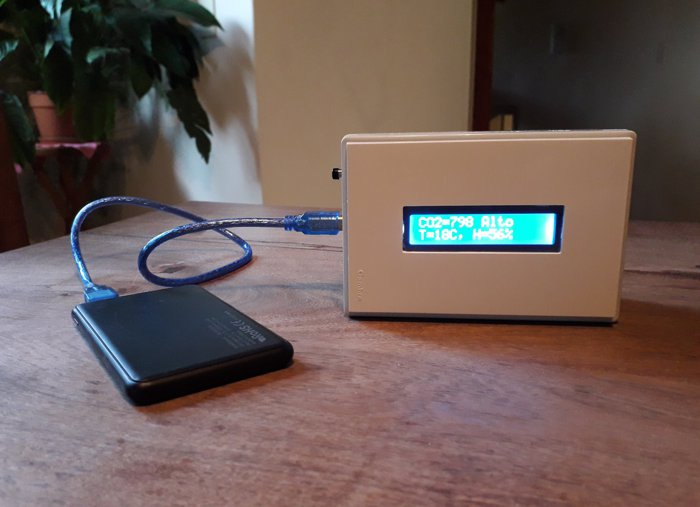

Alejandro B. Kolton
Physicist specializing in non-equilibrium disordered systems and computational statistical physics.
Recent
- paper Geometric flow of planar domain-wall loops, J. Stat. Mech. (2026) 093202, with P. Domenichini and G. Salazar.
- preprint Roughening of active nonlinear interfaces with broken tilt symmetry, with A. M. Cámara and J. L. Iguaín.
- paper Data-driven modelling to predict forest fire spread in the Patagonian region in Argentina, Ecological Modelling 518, 111618 (2026).
- preprint Activation and avalanche length scales in the finite-temperature creep of an elastic interface, with G. Russo, E. E. Ferrero, A. Rosso and D. Vandembroucq.
- talk Spatio-temporal chaos in field-driven magnetic domain walls at LAFMAT (video).
- talk When driven interfaces go wild: chaos and roughening without disorder at the ICTP-SAIFR workshop on non-equilibrium statistical physics (video).
- paper Deterministic roughening in the dc-driven precessional regime of domain walls, Phys. Rev. B 113, 064411 (2026), with PhD student E. F. Pusiol.
- group Welcome to new PhD students Enzo F. Pusiol and Ailén M. Cámara!
Research interests
Phenomenology of driven extended systems in disordered landscapes:
- Domain walls in ferromagnets and ferroelectrics
- Vortices in high-Tc superconductors
- Magnetic skyrmions
- Amorphous solids
- Earthquakes
- Electronic glasses
- Cold atoms in dissipative optical lattices
- Propagation of infectious diseases and forest fires
- Active matter
Also:
- Theory of disordered elastic systems
- Out-of-equilibrium glassy dynamics
- Non-linear dynamics
- Stochastic thermodynamics
- Computational statistical physics
- GPGPU computing
- Everyday life physics teaching
- Physics teaching with open-source software and hardware
Selected publications
- Depinning free of the elastic approximation
A. B. Kolton, E. E. Ferrero, A. Rosso — Phys. Rev. B 108, 174201 (2023) - Universal pinning energy barrier for driven domain walls in thin ferromagnetic films
V. Jeudy, A. Mougin, S. Bustingorry, W. Savero Torres, J. Gorchon, A. B. Kolton, A. Lemaître, J.-P. Jamet — Phys. Rev. Lett. 117, 057201 (2016) - Creep dynamics of elastic manifolds via exact transition pathways
A. B. Kolton, A. Rosso, T. Giamarchi, W. Krauth — Phys. Rev. B 79, 184207 (2009) - Mode locking in ac-driven vortex lattices with random pinning
A. B. Kolton, D. Domínguez, N. Grønbech-Jensen — Phys. Rev. Lett. 86, 4112 (2001) - Hall noise and transverse freezing in driven vortex lattices
A. B. Kolton, D. Domínguez, N. Grønbech-Jensen — Phys. Rev. Lett. 83, 3061 (1999)
All publications → Also on: arXiv Google Scholar Scopus ORCID ResearchGate Physical Review CONICET
Affiliation
- Teoría de la Materia Condensada, Centro Atómico Bariloche (CNEA)
- Principal Researcher, Consejo Nacional de Investigaciones Científicas y Técnicas (CONICET)
- Assistant Professor (Profesor Adjunto), Instituto Balseiro, Universidad Nacional de Cuyo (UNCUYO)
Background
- Education
- Master and PhD in Physics (2003) at Instituto Balseiro, Argentina.
- Postdocs
- Université de Genève · Universidad Complutense de Madrid · Universitat de Barcelona
Teaching
- Statistical Mechanics
- Introduction to Numerical Computing on Graphics Processors (GPUs)
Outreach

Low-cost CO2 meters for the pandemic
As an Instituto Balseiro extension project during the COVID-19 pandemic, I designed a simple, low-cost, non-commercial CO2 meter, built with Arduino and an NDIR sensor and fully documented so that anyone can build one, no expertise required. We built five of them to measure air quality in schools, labs and institutes in Bariloche, as part of the national Ventilar campaign.
Documentation, hardware and code on GitHub → Webinar (video) (2021, in Spanish)
Supervision
- Enzo Fabrizio Pusiol, PhD CONICET, 2025–present
- Ailén Magalí Cámara (co-advisor), PhD CONICET, 2025–present
- Mauricio Exequiel Romano (co-advisor, with J. Curiale), PhD CONICET, 2026–present
- Amian Gonzalez, PhD CONICET, 2023–2024
- Pablo Domenichini, postdoc CONICET, 2022–2025
- F. Elías, PhD CONICET, 2017–2023
- V. H. Purrello, PhD CONICET, 2015–2020
- E. E. Ferrero, postdoc CONICET, 2011–2013
Contact
- alejandro.kolton AT ib.edu.ar
- Address
- Centro Atómico Bariloche
Av. E. Bustillo 9500
R8402AGP San Carlos de Bariloche
Río Negro, Argentina
If you are interested in any of my current research lines and wish to do a Master, PhD or postdoc in my group, please contact me by email.
Off the clock I play saxophone and tinker with side projects — see Beyond research.